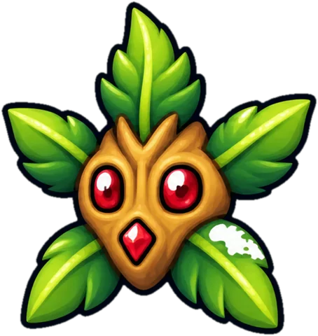

 Grass
Grass Psychic
PsychicTap a stage to read its story.
A tiny round face peeks out from a ruff of five broad green leaves arranged like a starfish, with two bright red eyes glowing at the centre. Seedasprite drifts through the Light Grove at ankle height, spinning slowly as its leaves catch the breeze to sense thoughts floating on the air. Each leaf flickers when it catches a name it has never heard drifting from a child's mind. The guardians first spotted it orbiting the grove's oldest song-tree like a slow green planet.
Field note: Spin a Seedasprite gently and it will echo back the last word you were thinking.
Light Grove. Seedasprite and its family are found in the Light Grove. See everyone who lives there.
Share a Bond Food that matches its types to become friends. Seedasprite loves:
A Bond Food is not a trick. It joins your spirit with the Kimuro's spirit, and only when it chooses you.
Print the Kimuro adventure packs: mazes, cards, a board game and Bond Mark medals.
See the printable packs